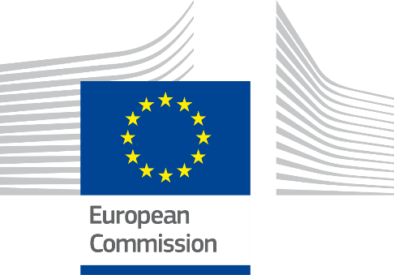

ISA2
Digital Government Factsheet 2019
Republic of North Macedonia
ISA2
Digital Government Highlights 6
Digital Government Political Communications 7
Digital Government Legislation 11
Digital Government Governance 15
Digital Government Infrastructure 19
Digital Government Services for Citizens 24
Digital Government Services for Businesses 31
Population: 2 075 301 inhabitants (2018)
GDP at market prices: 10 734 million Euros (2016)
GDP per inhabitant in PPS (Purchasing Power Standard EU 28=100): 36 (2017)
GDP growth rate: 2.7% (2018)
Inflation rate: 1.5% (2018)*
Unemployment rate: 20.7% (2018)*
General government gross debt (Percentage of GDP): 73.7%*
General government deficit/surplus (Percentage of GDP): -2.74%**
Area: 25 713 km²
Capital city: Skopje
Official EU language: Macedonian
Currency: MKD
Source: Eurostat (last update:15 March 2019), National Bank of the Republic of Macedonia*, Country Economy**
The following graphs present data for the latest Generic Information Society Indicators for the Republic of North Macedonia compared to the EU average. Statistical indicators in this section reflect those of Eurostat at the time the Edition is being prepared.
Percentage of individuals using the internet for interacting with public authorities in North Macedonia | Percentage of individuals using the internet for obtaining information from public authorities in North Macedonia |
Percentage of individuals using the internet for downloading official forms from public authorities in North Macedonia | Percentage of individuals using the internet for sending filled forms to public authorities in North Macedonia |
This section of the factsheet is meant to present the country performance on the main eGovernment indicators according to the latest eGovernment Benchmark report, which monitors the development of eGovernment in Europe.
At the present moment the report does not analyse the state of play of eGovernment in North Macedonia. In 2018, for the first time, Republic of North Macedonia was included in the eGovernment Benchmark measurement.
Digital Government Political Communications
In February 2018, the Strategy for Public Administration Reform 2018-2022 and respective Action Plan were adopted in North Macedonia. This strategy also addressed eProcurement and interconnectivity of base registries with some measures.
The Strategy and Action Plan for Open Data 2018-2020 were adopted in July 2018.
The National Cyber Security Strategy and Action Plan 2018-2020 were adopted by the Government, in August and December 2018 accordingly.
Digital Government Legislation
The Law for Procurement was changed and adopted in May 2018, with the date of enforcement set on 1 September 2018.
Digital Government Governance
The National ICT Council was established in February 2018. The responsibilities, members and authority of the Council were later extended to National ICT and Cyber Security Council.
Digital Government Infrastructure
Digital Government Services for Citizens and Businesses
Strategy and Action Plan for Public Administration Reform 2018-2022
The Strategy and Action Plan for Public Administration Reform (PAR) 2018-2022 were adopted in February 2018.
The Strategy defined the measures to be taken in the next five years to achieve the goals and objectives defined in each of the priority areas. The fourth area in the strategy is Service Delivery and ICT Support of Administration.
Public Administration Reform (PAR) is a continuous process of reorganisation of public sector institutions and improvement of their administrative capacity. It is one of the key priorities in the Accession Partnership, and an important precondition in the process of European integration of the Republic of North Macedonia. Initiatives for the modernisation and promotion of the administration remain ongoing. The state and public administration are seen as the basis of the overall public sector, which depends on the processes and development in any democratic society. Public sector work reflects democratic values as a whole and in that sense all institutions have the responsibility to work towards achieving better value for citizens and businesses and thus ensure social and economic development, that is, prosperity of the state as a whole.
In response to assessments from the European Union to improve improving the public administration, the Government of the Republic of Macedonia (GRM) Work Programme for 2017-2020 set the following strategic target: "The Government of the Republic of North Macedonia will work to create an expert and efficient, accountable and transparent administration that will provide quality services for the citizens and the business sector and will protect their rights. By applying the principles of fairness and professionalism in employment and objectivity in the promotion and rewarding of employees in the public administration, the Government of the Republic of North Macedonia will create an administration that will be free from party affiliations and will be committed to solving the problems of citizens and business entities, respecting the principles of legality and impartiality in the exercise of their duty.”
Reform in public administration in the context of this strategy means reform in the following priority areas:
1. Policy creation and coordination;
2. Public service and human resources management;
3. Responsibility, accountability and transparency; and
4. Public services and ICT support to the administration.
Consequently, the PAR Strategy 2018-2022 has four general objectives:
OC1: Effective, efficient and inclusive policies;
OC2: Professional, professional and departed administration;
OC3: Responsible, accountable and transparent operation of the institutions; and
OC4: Providing services in a fast, simple and easily accessible way.
In order to achieve the defined goal in the priority area of delivering services and ICT support to the administration, measures and activities will be undertaken which lead to investments in the development of the digital environment. The quality and availability of public services will be increased to give access to, and the ability to use, e-services. Measures and activities include the development of strategies, programmes and methodologies; conducting analyses and projects based on the findings and recommendations from the analyses; research on introducing innovative solutions; simplifications and facilitation of processes; and more. One of the most important features is the active involvement of users in the process of defining and designing the services, which will be developed according to their needs.
Programme of the Government of the Republic of North Macedonia
The Programme of the Government of the Republic of North Macedonia (2017-2020) is broad and covers a variety of different domains. There is a specific assessment for the IT sector and a plan to help public administrations transition towards new technologies. The goal of the Government will be the development of the IT sector as well as the simplification and acceleration of communication between citizens and public administrations. The government will give priority to the creation of electronic registers as the basis for all electronic government services provided to citizens and businesses.
National Long-Term ICT Strategy
During 2018, a Roadmap was developed with directions to prepare a National Long-Term ICT Strategy, aligned with the Digital Agenda for Europe 2020. The roadmap was outlined in the PAR report of 2018. With the aim of harmonising and introducing all strategies from the ICT field under its umbrella, the e-Government Strategy and Implementation Action Plan, as well as the development of the Policy for the use of "Cloud" infrastructure, will be included in this long-term ICT strategy.
Strategy and Action Plan for Open Data
The Strategy and Action Plan for Open Data 2018-2020 were adopted in July 2018.
The Open Data Strategy set forth measures to be undertaken for encouraging the release and use of public data, and to implement them broadly in order to contribute in raising transparency and accountability of state institutions. This will improve the quality of services they offer and at the same time stimulate innovation, thus contributing to the development of North Macedonia’s society and economy as a whole.
The Open Data Strategy aims to encourage the promotion and use of open data with the understanding that data produced by governmental and public sector bodies are an asset for the citizens of North Macedonia.
The Strategy envisages deploying a central government open data portal, developing a methodology for data inventory and conducting an inventory in state institutions. It will introduce a licensing model for data, establish a management structure and guidelines to facilitate the release of datasets; and raise awareness and foster the creation of public value through collaboration and partnerships with stakeholders from within and outside the public sector.
North Macedonia’s open data strategy aims to develop a dynamic open data ecosystem in which data are produced, opened enriched and reused by multiple actors from the public and private sector, civil society and academia. As a result, it will lead to improved public service delivery and public sector efficiency, increased public engagement, support efforts to combat corruption and contribute to the creation of an innovative climate that delivers new economic opportunities for the business sector.
This strategy will also contribute to ensure that North Macedonia meets EU requirements on government transparency and accountability, and most specifically the goals set with the Reuse of Public Sector Information directive and other measures supporting the opening up of public sector information.
Third Action Plan for Open Government Partnership of North Macedonia
In July 2016, the Government of North Macedonia adopted a third Action Plan for the Open Government Partnership. Just like under the previous Action Plans, for the next two years, the Government of North Macedonia committed to increase efforts to make public institutions open, transparent, accountable and efficient. Action Plan implementation involved undertaking a number of activities for building citizen and company partnerships in designing national policies and drafting national legislation, strategies, and initiatives. Additionally, interactive web portals were established in order to facilitate the consultation process, increase transparency and allow for participation in discussions.
The Open Government Partnership Action Plan focused on six thematic areas: participatory policy-making, open data, public access to information, reducing corruption and promoting the rule of law, efficient management of public resources and local level openness. The Action Plan outlined key developments the Government pledged to take in each of the thematic areas, the responsible institutions for each, and the planned timeline for their achievement.
No political communication was adopted in this field to date.
National Cyber Security Strategy and Action Plan 2018-2022
The Strategy for Cyber Security was first adopted in August 2018; its Action Plan was developed at a later date. This strategic document fostered the development of safe, secure, reliable and resilient digital environment, supported by high-quality capacities, based on cooperation and trust in the field of cyber security. The document was organised in seven parts.
The first section introduced the topic, focusing on increased dependency on cyberspace services, the increased use of Information and Communication Technologies (ICT) and the negative influence of severe cyber threats on the functioning of the public and private sectors.
In the second section, the Strategy examined the major cyber trends, challenges and threats key in relation to the cyber space of North Macedonia.
Section three laid down the cyber security principles that support the Strategy:
Section four defined the stakeholders in the field of cyber security in the country: public sector, private sector, academic community, citizens and civil society organisations.
The fifth section stated the vision and mission of the National Strategy.
Section six established the “5C” Goals of the Section six National Cyber Security Strategy. The objectives of each of the five goals were as follows:
Section seven was devoted to the generalisation of the Action Plan for the implementation of the National Cyber Security Strategy, along with the challenges for successful implementation. The document highlighted the responsibilities of authorities defined in the Strategy regarding the support of the goals and activities outlined in this document. In addition, this section established the organisational structure for coordination of the development and implementation of the course of actions defined in the Strategy and the Action Plan.
No political communication was adopted in this field to date.
No political communication was adopted in this field to date.
No political communication was adopted in this field to date.
The Interoperability Framework exists and has been for the past several years. Its legal basis resides in the Law for Electronic Management. An Interoperability Framework has also been developed and consists of legal, organisational, semantic and technical aspects.
No political communication was adopted in this field to date.
No specific legislation on digital government was adopted to date.
Law on Public Sector Data Use
This law of 2014 established the obligation of the authorities and public sector institutions to publish the data they created in the exercise of their responsibilities under the law. It enabled natural or legal persons to create new information, content, applications or services.
The purpose of this law was the use of data from the public sector to foster innovation and creation of new information; content and applications through combining or crossing the data; the creation of new services; creating jobs and social inclusion; increased accountability and transparency of the public sector; improving the quality of data from the public sector; the economy and the development of competition; and the development of an information society in North Macedonia.
Subject to use all the data from the public sector except:
Data excluded by the Law on Free Access to Public Information;
Data with limited access by law;
Data whose creation is not subject of the authority or institution from the public sector;
Data in which third parties have the right to intellectual property;
Data which belongs to the public broadcaster, its bureaus and to the institutions responsible for transmitting the public service broadcaster;
Data belonging to educational or research bodies and institutions, including organisations founded for research results exchange;
Data belonging to institutions in the field of culture except libraries, museums and archives.
Law on Free Access to Public Information
The Law on Free Access to Public Information (Official Gazette No. 13/06, 86/2008, 06/2010, 42/14, 148/15, 55/16, 64/18) was initially adopted on 25 January 2006. According to its provisions, any natural or legal entity was allowed to obtain information from the State and municipal bodies, as well as from natural and legal entities performing public functions. The requests, which could be oral, written or electronic, must be responded to within 10 days. Several legal exemptions were provided for: classified and confidential information; personal data; tax violations; pending investigations; documents being compiled, in case their access causes misunderstanding; environmental protection; and intellectual property protection. All exemptions undergo a proportionality test balancing public interest against possible harm.
Law on Electronic Documents, Electronic Identification and Trust Services
The Law on Electronic Documents, Electronic Identification and Trust Services was drafted and published in the National Register of Regulations (ENER) in June 2018. After the process of public consultation, a final version of this law was prepared and sent to the Parliament for its adoption. This law will be the basis for introducing appropriate electronic identification schemes at the level of administration. The draft law is completely aligned with EU eIDAS regulation. With the adoption of this law, the acting Law on Data in Electronic Format and Electronic Signature will be repealed.
Law on Data in Electronic Form and Electronic Signature
This law concerns electronic operations which involve the use of ICT, as well as that of electronic data and signatures in judicial, administrative and commercial transactional procedures. According to Article 13, "the generally accepted electronic signature with an authorised certificate related to the electronic data is equal to the personal signature, and therefore shall be of equally valid evidence with the personal signature which is related to paper documents". However, this article further provides that "the electronic signature shall not be valid when a personal signature is required in writing before a public notary or a court."
The law was followed by four bylaws in 2001, though its actual use started in 2007 after the issuance of the fifth bylaw which regulated the institutions that can act as certification authorities (Official Gazette No. 34/2001, 06/2002 and 98/2008). The entire body of legislation also regulated the process of using electronic messages such as timestamps, system identifiers and others.
Further amendments to the law were made in 2015, when the Ministry of Information Society and Administration became the institution in charge of registering Certificate Authorities (CAs) on national level, while the Agency for Electronic Communication became the official body for the accreditation of CAs.
Law on Personal Data Protection
Harmonisation of legislation in the area of personal data protection has been one of the government’s priority activities since 2002. A new Law on Personal Data Protection (Official Gazette no. 7/2005, 103/2008, 124/2008, 124/2010, 135/2011, 43/2014, 153/2015, 99/2016 and 64/2018), amended to include EC recommendations, was drafted in 2004, adopted on 25 January, 2005, and modified to comply fully with the European Directive 95/46/EC in 2008. The law represents a lex generalis in the area of data protection in the country.
According to the law, personal data shall be fairly and lawfully processed; collected for specified, explicit and legitimate purposes; processed in a manner which is consistent and proportionate with these purposes; accurate and complete; kept for no longer than the necessary timeframe for fulfilling the abovementioned purposes.
The draft of a new law was made in 2018 for the purpose of alignment with the EU GDPR regulation.
Law on Central Population Register
The Law on Central Population Register was drafted and published in National Register of Regulations (ENER) in April 2018. After the process of public consultation, a final version of this law was prepared and sent to the Parliament for its adoption. This law described the content of the Population Register, data exchange with other registers and systems, responsibilities for data, and other rules for its management and usage. The draft text of the law integrated and harmonised with eIDAS Regulations.
No legislation was adopted in this field to date.
Law on Public Procurement
The Law on Public Procurement (Official Gazette No. 136/2007, 130/2008, 97/2010, 53/2011, 185/2011, 15/2013, 148/2013, 160/2013, 28/2014, 43/2014, 130/2014, 180/2014, 78/2015, 192/2015, 27/2016, 120/201 and 165/2017) initially entered into force on 1 January 2008, replacing previous legislation from 2004 and 2005, and instituting the Public Procurement Bureau as a body within the Ministry of Finance. It continuously monitored the implementation of public procurement legislation. The law was adopted in an effort to enhance the integrity of the government’s purchasing decisions. It aimed to increase transparency in tendering procedures, provide consistency with other legislation and strengthen the legal protection of bidders.
This law aligned national legislation on public procurement with EU Directives on public procurement (2004/17/EC and 2004/18/EC), including their eProcurement provisions. In this respect, the law regulated the use of electronic means at various stages of the procurement process (eNoticing, eTendering, etc.) via the Electronic System for Public Procurement (ESPP), which was put in operation in January 2010.
Further amendments to the law were made in 2018.
Law on Electronic Commerce
The Law on Electronic Commerce was initially adopted by parliament on 26 October 2007 (Official Gazette No. 133/2007). The law regulated Information Society services related to electronic commerce and commercial communication along with the responsibilities of the providers of these services. It enabled electronic documents to be treated as official contracts and defined their legibility as paper documents. In addition, the law outlined the form and validity of contracts in electronic form, demanding that those contracts be concluded by electronic means.
Further amendments to the law were made in 2011 and 2015, and 2017.
Law for Archive Material
Adopted in 2012, (Official Gazette No. 95/2012) this law regulated the protection, preservation, processing and use of archival material, inspection and responsibilities of the State Archive of the Former Yugoslav Republic of Macedonia. It defined keeping electronic documents in their original format following criteria for its accessibility and integrity. Further amendments to the law were made in 2014 and 2015.
The Decree for office and archive operation with electronic exchange, MISA and the State Archives Office was later revised: there was a need to reform legal regulations that regulated archival work to reflect the introduction of electronic documents. In December 2018, MISA began preparations for a new law, the Law on Archive Activity, which should provide the basis for proper implementation of standards for processing archival materials and introducing digitisation into the archival activity.
The Law on Electronic Management (Official Gazette, no. 105, 21/08/2009), adopted on 21 August 2009, regulated the work of ministries and other government authorities in the exchange of data and documents in electronic format, in relation to the implementation of administrative services by electronic means. Seven bylaws were adopted in June 2010 to enable implementation, as well as that of electronic workflow procedures and electronic document exchanges. Those acts regulated issues such as environment and communication; certification of information systems; format and content of administrative services by electronic means such as electronic documents; standards and regulations for electronic communication; technical requirements; security of information systems; format and content of administration of databases and others.
In 2018, the Law on Electronic Management and Electronic Services was drafted to replace the current Law on Electronic Services. After public consultations, changes were made to harmonise the legal framework with the using e-services, the National Portal for e-services, keeping a catalogue of all services provided by institutions at central and local level, the functioning of the Public Services Hall, the introduction of Data Quality Standards in the registers, and more. The draft text of the law was judged by the relevant Directorates of the European Commission to be clear, of good quality and adequately integrated and harmonised with eIDAS Regulations.
Law on Services
Obstacles to the commencement of economic activity and the provision of service activities necessitated the adoption of a general legal framework in the service sector, and aligning it with the EU Internal Market Services Directive 2006/123/EC (Service Directive).
Its implementation was intended to ensure the smooth movement of services through the removal of legal and administrative restrictions for performing service activities, the establishment of one place through which service providers can submit requests for the necessary licensing procedures electronically, the promotion of cooperation between regulators from individual countries, and improvement in the quality of services.
The Draft Law regulates the general legal framework for access to the market of services and provision of service activities by determining basic principles and principles of non-discrimination and simplification of the approval procedures. The draft law regulated the functioning of the ETC, which will provide the necessary information and assistance with procedures for market access, and for the provision of services to be available electronically.
No legislation was adopted in this field to date.
Ministry of Information Society and Administration
The Ministry has responsibility for all issues pertaining to information technologies. The Ministry is responsible for policy and strategy in eGovernment.
Damjan Manchevski Minister of Information Society and Administration Contact details: Ministry of Information Society and Administration 'Sv Kiril i Metodij' 54 1000 Skopje Tel.: +389(0)2 320-0870 Fax: +389(0)2 322-1883 Email: cabinet@mioa.gov.mk Source: http://mioa.gov.mk/
|
Government Ministries and State Bodies
Government ministries and state bodies are responsible for the development and monitoring of National and Local/Domain specific strategies and policies.
National ICT and Cyber Security Council
The National ICT council was established in February 2018 to prepare and monitor the implementation of the National ICT Strategy, as well as provide guidance on annual public procurement plans and for technical specifications in tender documentation for the public sector institutions and for the procurement of ICT equipment and/or software.
The National Cyber Security Strategy and Action Plan envisaged the establishment of a high-level body for defining new strategic directions and recommendations related to the cyber security segment, as well as for coordination and monitoring of the activities defined in the strategy and action plan. At the end of 2018, the Government of Republic of North Macedonia made a strategic decision to establish the National ICT and Cyber Security Council, by extending the responsibilities, members and authority of the existing National ICT council. The decision made official in January 2019 (Official gazette 5/2019).
The National ICT and Cyber Security Council consists of relevant ministers, thereby ensuring compliance of strategic-level decisions across state institutions. The Council has the following responsibilities:
Digital Forum
The Digital Forum for Information and Communication Technologies was established in June 2018 (Official Gazette 107/2018), as an expert and advisory body in the field of information society. The Digital Forum provides coordination and participation in the development of the information society of the public, private, civil society and academic community.
Government ministries and state bodies
Government ministries and state bodies, on national and local level, are responsible for the implementation of sectorial ICT and eGovernment projects.
National ICT and Cyber Security
The National ICT and Cyber Security Council is supported by an Operational body for expert and operational-logistical support, with the following responsibilities:
Assist in the preparation of requests, strategic documents and proposals;
Prepare reports with proposals for further action;
Reviews good practices and proposes measures to improve the situation;
Cooperate with other operational working bodies and ICT groups;
If necessary, participate in the sessions of the Council and other ICT support bodies;
Review strategic documents and projects related to ICT;
Review and give opinions, suggestions and advice on other matters, at the request of the Council related to the scope of work of the Council.
The Cyber Security Strategy and the Action Plan envision establishing a body with operational cyber security capacities (within an existing state authority) to be in charge of the operational implementation of the Action Plan. Given that this activity requires significant resources, until its establishment these activities will be conducted by an inter-ministerial working group consisting of representatives from the MISA, MoD, MoI and MKD-CIRT.
At the beginning of January 2018, in preparation for the National Operational Broadband Plan of Republic of Macedonia (NOBP), the Minister of Information Society and Administration established four working groups:
Working group for ensuring better coordination of the mapping process on the territory of the country with existing and planned future broadband networks
Working group for determining free capacities and their future use within the electronic communications networks built with public funds;
Working group for determining the measures and activities needed for introduction of 5G mobile technology in Republic of Macedonia;
Working group for determining draft measures for encouraging and increasing the interest of citizens for using broadband;
Representatives from state authorities and bodies, regulatory bodies, universities, municipalities, operators, chambers of commerce, public enterprises, private companies etc. took part in the working groups.
All relevant documents, proposals and remarks from all interested parties, as well as minutes from the working group meetings, were published on MISA’s website.
No responsible organisations were reported to date.
The State Audit Office (SAO) was established in 1997 by the Parliament under the State Audit Law (SAL). Each year, the audits appear in the Annual Programme of the State Audit Office. The following entities are mandatorily included in the annual audit: central government, local government units and funds, state-owned enterprises and political parties.
Directorate for Personal Data Protection
Establishment of this Directorate was the result of the Law on Personal Data Protection of 2005, which implemented Directive 95/46/EC on Data Protection. The Directorate for Personal Data Protection became an independent state body on 22 June 2005. Among other functions, it ensured the respect of personal data protection principles and assessed the legality of personal data processing. In 2011, the Directory produced a draft strategy on the Provision for Secrecy and Protection of Personal Data Processing for the period 2011-2015.
Association of Local Government Units of the Republic of North Macedonia (ZELS)
ZELS is a non-profit organisation and unique national association. It includes all 80 municipalities with the City of Skopje as a separate unit of local self-government on a voluntary basis. It was founded on April 26, 1972. The president of ZELS is a member of the National Council for ICT and Cyber Security.
Central Government
Due to the small size of the country, there are ongoing efforts to centralise e-Government activities, information systems and other resources, in order to improve results and use resources more efficiently. Currently, certain eGovernment activities are owned by the central Government, and for some processes only the local Government is in charge.
No responsible organisations were reported to date.
Responsibility for the implementation of eGovernment lies with the central government and its previously mentioned actors.
No responsible organisations were reported to date.
No responsible organisations were reported to date.
No responsible organisations were reported to date.
No responsible organisations were reported to date.
A new portal was introduced to support changes in the Law on Personal Income Tax (Official Gazette of North Macedonia No. 190/2017). Starting from January 1, 2018, a new procedure for calculating and paying the personal income tax liabilities was introduced, so that the calculation of tax was done by submitting an Electronic Calculation for Income and Tax to the PRO through the new e-PDD system.
With the introduction of new user-oriented services for personal income tax, and besides a number of benefits, the administrative burden was reduced and obligations for submitting some returns and reports to the PRO were abolished.
New Open Data Portal
The new Open Data portal of North Macedonia was launched in December 2018.
The portal created a dynamic ecosystem of open data in which data was produced, opened, enriched and reused by various stakeholders from the public, private, academic and civil sectors. This will lead to improved delivery of services and efficiency of the public sector, increasing citizen participation, as well as supporting efforts to fight corruption and contributing to the creation of an innovative climate with new economic opportunities for the business sector. This will also have a positive impact on the Euro-integration processes of the Republic of Northern Macedonia regarding the transparency and accountability of the Government. In particular, the objectives defined in the Directive on the use of public sector information and other measures aimed at opening information from the public sector.
The Open Data Portal facilitated the distribution of open data. Through the open data portal, users are provided with a single access point to the open data sets of all institutions, where users can search, retrieve, and visualise data sets
The Open Data Portal provides/enables:
An open data platform based on best world practices;
Opening data sets in computer readable formats;
Decentralised data management by institutions that produce data sets in their day-to-day operations;
Possibility of automatic collection ("harvests") of published data sets by other open data portals;
Statement of metadata for data sets;
Increasing the involvement of users for data re-use.
Each institution is responsible for its data published on the Open Data Portal. This includes compliance with open data policies, removing sensitive elements from data before publishing, converting to open formats, providing metadata of high quality, and regularly checking and updating data after they have been published.
New Customs Administration Portal
The New Customs Administration portal was launched in 2019 in North Macedonia. The Customs Administration performs its competences throughout the entire territory of North Macedonia through the headquarters and five Customs Houses. The headquarters, located in Skopje, coordinates and manages customs competences in the entire territory of North Macedonia, and different Customs Houses coordinate and manage their particular region.
Uslugi.gov.mk - eGovernment Portal
Uslugi.gov.mk was established in 2003, as the single point of access to information on Government services. The portal is a result of the government’s efforts to create a more efficient and transparent administration by presenting to the public all available services for both citizens and business entities.
The portal enables citizens and businesses to reduce the time required to find information about government services; to gain timely and easy access to information about changes in government services; to reduce time for distributing information services; to link to government institutions; and to establish procedures for simple modification of existing and introduction of new services.
In 2018, a new national portal was developed. Besides information, it offered complete provision of e-services for citizens, including payment and e-document issuing. One key component was the Catalogue of Services (all public services issued by administration), whose data was published on the portal in three languages, and categorised by life-events, categories and sub-categories, institutional responsible for services and other tags. The link to the Portal was unchanged: https://uslugi.gov.mk. The Catalogue is accessible for authorised public servants on https://admin.uslugi.gov.mk. The Portal will closely relate with the National Central Population Register, and it will offer Single-Sign-On for the citizens.
The Portal was based on a system with scalable architecture that allowed for expanding capacity when needed. The preparation, processing and publication of the portal’s content was entirely decentralised and distributed throughout all government institutions, through the Catalogue of services. Development of new e-services as well as integration of existing ones into the Portal and introducing new legal entities (businesses) as Portal users is underway.
Portal for RegulationThe Unique National Electronic Registry of Regulations of the Republic of North Macedonia is a portal where each draft of a law or bylaw must be published for public comments before being adopted by the government and parliament. The filled Regulatory Impact Assessment (RIA) templates are published together with the regulation documents.eEmployment
Portal for checking the personal employment history data.
Health Insurance Services Portal
Portal for Health Insurance services for citizens, as well as for medical institutions and businesses (pharmacist and general practitioner doctors).
ePension Portal
Portal for checking the data from pension insurance register.
eGovernment Sessions
UVMK is a portal for on-line orders and for payment of birth, marriage and death certificates, and receiving the (paper) documents by registered mail.
Upgraded portal for government eSessions used by all ministries and great number of state bodies. The portal’s functionalities allow for the preparation of materials, their submission, and collaborative functionalities.
The IT Network is designed to be the backbone communications infrastructure that connects all departments in a secure and interoperable environment. The aim of this project is to make a solid infrastructure among all government institutions. At the end of October 2008, a fibre optic connection was established bringing about the following benefits:
According NOBP, by the end of 2029 all public institutions (schools, universities, research centres and other education institutions, healthcare facilities, ministries, courts, local self-governments and other state authorities and bodies) should have symmetrical internet access with a speed of at last 1Gbps. In order to achieve this national broadband target, PE MRD will build and develop a National Backhaul Optical Infrastructure/Network, which will connect public institutions.
The construction of this network will use the free capacities of the existing optical infrastructure (optical cables, fibres, ducts) built with public funds. Such an optical infrastructure is managed by: MEPSO (company fully state-owned for electricity transmission via the high voltage network), Macedonian railways, GAMA (natural gas transmission company), MER (state owned company for construction of natural gas pipeline systems), ZELS, PE State Roads.
Under the coordination of MISA, and in cooperation with the World Bank, an application for technical assistance was prepared for a feasibility study for the construction and development of the National Backhaul Optical Infrastructure/Network as part of the NOBP, within the framework of the WBIF programme.
Portal for Electronic Communication (PEC)
PEC is on-line system for the electronic exchange of documents with the Customs Administration of North Macedonia. The system provides for external users to submit different types of requests to the Customs Administration in electronic form and to monitor the status of their requests in real time.
Web Services in the Area of Justice and Home Affairs
40 new web services were developed for the needs of the institutions in the area of justice and home affairs, thereby establishing new data exchanges between institutions.
Cadastre’s portal holds geospatial data and status of services. It was launched in 2010, and since then it has been upgraded every year with new functionalities, new data and new e-services. In 2018 it was upgraded with graphic register of streets and house numbers.
Supported by the eGovernment Project, the latest version of the old eProcurement system (EPPS) was launched on 10 February 2018. This system integrated a software solution for publishing contract notices and notifications developed by the Public Procurement Bureau. The new system is a one-stop-shop for public which improves efficiency and transparency. It streamlines complex procedures and facilitates interaction between businesses and government institutions. It is compliant with European Union Directives and supports all forms of public procurement including electronic auctions. As a result, approximately EUR 1.2 million government funds were saved in 2009. All public institutions and businesses can register through the system and obtain the obligatory digital certificates for posting tenders or sending bids. In January 2008, eAuctions became a part of it.
The upgraded electronic system for public procurement was launched on 1 June 2014 with more functionality and improvements in order to have easier access and more efficient operation in the procedures for awarding its users. Previously, PPB worked on the development of new modules of ESPP and enhancement of the existing ones, which will significantly simplify and facilitate the use of the application. Of all implemented updates, the most significant ones for users are the following: complete redesign of the panel and module for participation in auctions; functionality for submitting a response to the questions raised by economic operators for a specific procedure before the public opening of procedures carried out in paper form; improvements in module electronic mailbox - automatic announcement in the Official Gazette, and others.
No particular infrastructure in this field was reported to date.
One-Stop-Shop for LegalEentities
One-Stop-Shop is a portal for the registration of legal entities, amendments and deletions, online payment of registration fees, certificates in electronic or paper format and there is an option for the registration of authorised persons with the mandatory social security (Pension Fund and Health Fund) at the first registration. It can be utilised to register a company: when registering, there is an option for the automatic registration of authorized persons in Pension and Health Funds.
The Portal for eLearning for administrative servants enables SCORM packages to be uploaded and made available to all public servants. E-courses include a test, after which, if completed successfully, a certificate is generated for the participant.
Human Resources Management Information System - HRMIS
The Human Resource Management Information System (HRMIS) successfully launched. It included a function for salary calculation within the entire public administration. The new system developed new features, such as a payroll module, and is a marked improvement in terms of future access to data on the public-sector workforce.
In 2018, preparation for further modernisation and upgrade of the system was made.
TESTA-ng Network
The Government signed a memorandum of understanding with the EU on the quality and security requirements related to the connection to the TESTA-ng network for data exchange between EU member states and candidates. In 2018, TESTA-ng was used by the Ministry of Transport and Communications for the Tachonet application.
New Computerised Transit System (NCTS)
The NCTS uses advanced technologies and electronic data processing. It is a modern tool for transit procedures through the exchange of electronic messages between economic operators and customs offices, as well as only between customs offices.
System of Electronic Exchange of Data - SEED
The system of electronic exchange of data between Customs Administrations in the Western Balkan Region (Systematic Electronic Exchange of Data).
The majority of base registries are already in a digital format. Most can exchange data through the National Interoperability Platform.
Base registries in digital format are: Businesses (legal entities) registry, Registry for births, marriages and deaths, Citizenship Registry, Address registry, Real estate cadastre registry, Registry of vehicles, Registry of registration and deregistration for compulsory social insurance, Registry for users of pension funds, Registry of tax-payers, Registry of health insured persons, Registry of patients, and many more.
Register of Rare Diseases
This register records and monitors patients with rare diseases as well as data on therapy/medicines for rare diseases. The register is part of the national system for electronic evidence in health. Access is allowed only to authorised users with privileges. It is not a public website and the data cannot be accessed by the patient or unauthorised users.
Register of Diabetes
This national register records and monitors patients with diabetes. It is also part of the national system for electronic evidence in health. Access is allowed only to authorised users with privileges. It is not a public website and the data cannot be accessed by the patient or unauthorised users.
The information in this section presents an overview of the basic public services provided to the citizens. These were identified taking inspiration from Your Europe, a website which aims to help citizens do things in other European countries – avoiding unnecessary inconvenience and red tape in regard to moving, living, studying, working, shopping or simply travelling abroad. However, the categories used in this factsheet aim to collect a broader range of information, focusing therefore not only on cross-border services, but also on national services.
The groups of services for citizens are as follows:
Documents you need for travel in Europe | |
Passport | |
Responsibility: | Ministry of Internal Affairs Ministry of Foreign Affaires |
Website: | https://termin.mvr.gov.mk/ReqiuredDocuments http://www.mfa.gov.mk/index.php?option=com |
Description: | The service provides information and forms to download. |
Working abroad, finding a job abroad, retiring | |
Job search services by labour offices | |
Responsibility: | The Employment Service Agency of the Republic of North Macedonia and The Agency of administration |
Website: | |
Description: | Offers on-line registration of employment and unemployment for all public sector employee. It publishes vacancy announcements and other services. The Apply-On-Line system has registered a high level of usage. This system for applying, evaluation, selection and testing for employment has been operational since 2006. These procedures for public servant employment are now conducted through the system. |
Professional qualifications | |
Legal information system (incl. information on the regulated professions) | |
Responsibility: | Ministry of Education and Science |
Website: | (1) Regulated professions (2) NQF – National Qualifications Framework |
Description: | (1) As part of EU Acquis compliance, and in order to enhance the clarity and accuracy of data, the country was required to set up and maintain a publicly available database of regulated professions. The official list of regulated professions and a description of regulated activities covered by each profession is recorded in the database. (2) NQF is an important tool and makes a valuable contribution for modernising education and training, with a view to improving the quality and improving adaptability of education of labour market needs. Providing opportunities for improving skills, competences and knowledge through the system of adult education is crucial in order to address market needs. Both systems (1) & (2) are under development. |
Taxes for citizens | |
Paper tax declarations online submission | |
Responsibility: | Public Revenue Office (PRO) |
Website: | |
Description: | Since January 2018, PRO has collected personal tax data. From 2019, for the first time there was no need for citizens to submit paper tax declarations. |
Income taxes: declaration, notification of assessment | |
Responsibility: | Public Revenue Office, Ministry of Finance |
Website: | |
Description: | The eTax system for legal entities offers all services to be issued online, one of which is the possibility to submit tax declarations. Since 2013, submitting tax declarations online has been compulsory for all businesses except those with exemptions. |
Personal information / Application form | |
Responsibility: | The Pension and Disability Fund of North Macedonia |
Website: | |
Description: | Access is assigned through the process of application in the PDF offices. Since 2016, the personal certificate from the official CA in North Macedonia has been sufficient to provide access to e-services. At this moment: 1. Personal report on years of services, 2. Application form on old age or survivor retirement. |
Driving Licence | |
Driver’s licence | |
Responsibility: | Ministry of Internal Affairs |
Website: | |
Description: | The service provides information and forms to download. |
Registration | |
Car registration (new, used, imported cars) | |
Responsibility: | Ministry of Internal Affairs |
Website: | |
Description: | The service provides information and forms to download. |
Residence rights | |
eBuilding permits | |
Responsibility: | Regional Government |
Website: | https://www.gradezna-dozvola.mk/Account/Login?ReturnUrl=/ |
Description: | The portal for the eBuilding permit is under construction. It is being developed and maintained by ZELS, and it is available on their site, as a single point. However, service and responsibility reside with the municipalities and in some cases the Ministry of transport and Communication. |
Documents and formalities | |
Certificates (birth, marriage): request and delivery | |
Responsibility: | The Office for Certificates, Ministry of Justice |
Website: | https://e-portal.uvmk.gov.mk/ |
Description: | Certificates for birth and marriage can be obtained online. |
Housing (building and housing, environment) | |
Responsibility: | Ministry of Environment and Physical Planning |
Website: | http://www.moepp.gov.mk/ |
Description: | The service provides information and forms to download. |
Passport | |
Responsibility: | Ministry of Internal Affairs |
Website: | |
Description: | The service provides information and forms to download. |
School and University | ||
Enrolment in higher education/university | ||
Responsibility: | Universities | |
Website: | ||
Description: | This service (iKnow) is offered by the State Universities, and it offers forms for candidates to fill in their data. | |
Public libraries (availability of catalogues, search tools) | ||
Responsibility: | Local self-government | |
Website: | N/A | |
Description: | The majority of municipalities have portals for public libraries that offer catalogues of books available, as well as search tools. | |
Student grants | ||
Responsibility: | National Agency for European Educational Programmes and Mobility Ministry of Education and Science | |
Website: | ||
Description: | The Ministry of Education and Science opens online calls for grants and tuitions annually. The National Agency is in charge of European Educational Programmes and Mobility. | |
Researchers | ||
Information and assistance to researchers | ||
Responsibility: | EURAXESS North Macedonia | |
Website: | ||
Description: | EURAXESS North Macedonia provides information and assistance to mobile researchers. The EURAXESS website is a tool that helps researchers find research jobs in North Macedonia. The EURAXESS Service Centre provides free of charge practical information for relocation to North Macedonia. The portal contains information concerning professional and daily life, as well as information on job and funding opportunities. | |
Public libraries (availability of catalogues, search tools) | ||
Responsibility: | Local self-government | |
Website: | N/A | |
Description: | The majority of municipalities have portals for their public libraries that offer catalogues of books available, as well as search tools. | |
Healthcare | |
e-Health | |
Responsibility: | Health Insurance Fund (HIF). |
Website: | |
Description: | The portal offers various e-services such as: electronic registration/deregistration of a family member; validation of the status of health insurance of the insured/patients; submission of e-statements for regular students, thus ensuring continuity of health insurance for full-time students; electing/changing general practitioner doctor; preparation and publishing reports on the prevention of work and temporary inability to work – forms that are further communicated to the medical commissions and officers in the HIF for processing illness cases; filing submission of certificate of bio-medically assisted fertilisation; verifying acceptance of orthopaedics; and others. |
Health related services (interactive advice on the availability of services in different hospitals; appointments for hospitals) | |
Responsibility: | Ministry of Health |
Website: | |
Description: | Scheduling appointments with specialists and sub-specialists. It is available for each General Practitioner and includes notifications and reminders for patients. |
System for registration and management of medicines | |
Responsibility: | National Agency for Drugs and Medical Devices (MALMED) |
Website: | |
Description: | Covers the procedure for electronic submission of all requests for medicines (registration, a variation of medicines, etc.) for all types of medicines (humane, homeopathic, traditional medicine) as well as the implementation of the procedure for drug registration itself. |
National Pharmacovigilance System | |
Responsibility: | National Agency for Drugs and Medical Devices (MALMED) |
Website: | https://farmakovigilanca.malmed.gov.mk |
Description: | Reports adverse drug reactions. The system collects all information related to adverse drug reactions, whether they come from patients, the general public or healthcare providers and healthcare professionals, in a standardised form prescribed by the standard terminology of the World Health Organisation WHO-Art, i.e. medical dictionary of regulatory activities MEDRA. |
Children and Couples | |
Certificates (birth, marriage): request and delivery | |
Responsibility: | The Office for Certificates, Ministry of Justice |
Website: | |
Description: | Applications can be submitted by natural persons and legal entities (lawyer, notary and enforcement agent). The customer can pay for the certificate with VISA, MAster or MAESTRO card and can receive the document electronically, or in paper form delivered at home or in person. |
Certificates (birth): Welcome New-born | |
Responsibility: | Ministry of Health, Office for Certificates Births, Marriage and Death |
Website: | https://www.uvmk.gov.mk/mk/dobredojde_novorodence |
Description: | Project Welcome New-Born allows new parents to register baby births through the E-Health portal. The main project leader is the Ministry of Health, while the Office for Certificates and the Ministry of Internal Affairs are key involved partners. With this project, parents receive the birth certificate within 48 hours. Another option is to submit the application and choose the branch office where they would like to pick up the certificate, or receive a notification when the certificate is ready. |
Shopping | |
Consumer protection | |
Responsibility: | Consumers' Organisation of North Macedonia (OPM). |
Website: | |
Description: | The Consumers' Organisation of North Macedonia (OPM) advocates for citizens to fully exercise their consumer rights and practice responsible consumption. It is committed to the idea that consumers have the right to a better quality of life, while exercising their responsibility not to endanger this right of future generations through our selection and use of products and services. OPM exists to protect consumers in the exercise of their fundamental rights, such as: Availability of the most essential products and services; Safe and good quality products and services; Accurate and timely information and education for consumers on the correct choice of products and services; Redress when consumer rights are violated; Healthy environment and sustainable consumption. The purpose of OPM is accomplished by providing advice, information and education of consumers in terms of their individual and collective consumer rights through the representation of their interests in the processes of policy and legislation. The service is available for the clients only on informational level. |
The information in this section presents an overview of the basic public services provided to the Businesses. These were identified taking inspiration from Your Europe, a website which aims to help citizens do things in other European countries – avoiding unnecessary inconvenience and red tape in regard to moving, living, studying, working, shopping or simply travelling abroad. However, the categories used in this factsheet aim to collect a broader range of information, focusing therefore not only on cross-border services, but also on national services.
The groups of services for businesses are as follows:
Intellectual property | |
Patents | |
Responsibility: | Industrial Property Protection Office (IPPO) |
Website: | |
Description: | Database of patent, trademarks and industrial designs is available online for search. |
Start-Ups, developing a business | |
Registration of a new company | |
Responsibility: | Central Register |
Website: | |
Description: | From March 2014, company registration (incorporation) was made available on-line through e-registration. It allows for the registration of all changes in the trade register (amendments, statutory changes, announcements, registering working time, liquidations, deletions). |
Submission of data to statistical offices | |
Responsibility: | State Statistical Office |
Website: | |
Description: | In the direction of modernisation and simplification of the data collection process, the State Statistical Office started with electronic data collection with the gradual introduction of e-forms for statistical surveys. eStat is intended for collecting data from business entities via an e-form. |
Excise duties, VAT and business tax | ||
VAT refunds and excise duties | ||
Responsibility: | Central government, Ministry of Finance | |
Website: | ||
Description: | Through the eTax system the taxpayer can electronically submit all types of application forms (tax returns, claims, balance sheets, reports, attachments, etc.). Furthermore, the eTax system sends notes and email reminders for deadlines for the submission of tax returns. | |
VAT: declaration, notification | ||
Responsibility: | Public Revenue Office, Ministry of Finance | |
Website: | ||
Description: | This service is one of the services integrated in the eTax system (stated above in Corporate tax). | |
Corporate tax: declaration, notification | ||
Responsibility: | Public Revenue Office, Ministry of Finance | |
Website: | ||
Description: | The eTax service provides online submission and tax returns functionalities for companies, using authentication by digital signatures. From 1 January 2013, usage of the system became mandatory for all businesses. The system offers forms for submission of all declarations, VAT declaration and notifications, annual tax returns as for big, middle and small taxpayers and independent business workers, and it offers the possibility to send payment orders to the banks. | |
Customs declarations (eCustoms) | ||
Responsibility: | Customs Administration | |
Website: | ||
Description: | The Single Window for export/import licenses and tariff quotas system, (EXIM) is a web-based portal through which businesses can submit requests and receive the necessary licences for export, import and transit of goods. Unified requests for 66 different types of licenses can be filled in and submitted online, at any time and any place providing stable internet connection. To simplify and automate the process for submission of request electronically only once and from one location, two new software modules were introduced: module for automatic confirmation of paid administrative fees (which means that there is no need for the submission of the original receipt), and module for digital signing. | |
MAKCIS | ||
Responsibility: | Customs Administration | |
Website: | N/A | |
Description: | MAKCIS is an electronic system used for processing of the customs declarations. | |
Customs Declarations and Excise Documents Processing System (CDEPS) | ||
Responsibility: | Customs Administration | |
Website: | N/A | |
Description: | The Customs Administration is developing a new Customs Declarations and Excise Documents Processing System (CDEPS). It will ensure an uninterrupted flow of electronic information among all participants in the customs and excise procedures by interconnecting the external, national and common EU domain and the domain of other state agencies. | |
Integrated Tariff Environment (ITE) | ||
Responsibility: | Customs Administration | |
Website: | www.ite.customs.gov.mk | |
Description: | The Integrated Tariff Environment (ITE) is a business concept that groups several computer systems as part of an information exchange between the European Commission and EU Member States. | |
New Computerised Transit System (NCTS) | ||
Responsibility: | Customs Administration | |
Website: | ||
Description: | The New Computerised Transit System (NCTS) uses advanced technologies and electronic data processing. It is a modern tool for transit procedures through exchange of electronic messages between economic operators and customs offices, as well as only between customs offices. | |
mTax - Enapsys System | ||
Responsibility: | Ministry of Information Society and Administration | |
Website: | ||
Description: | The Enapsys system provides payment of administrative taxes via SMS. The system was modernised. | |
Public contracts | |
Public procurement / eProcurement | |
Responsibility: | Public Procurement Bureau, Ministry of Finance |
Website: | |
Description: | The latest version of the eProcurement system (EPPS) provides an integrated software solution for publishing contract notices and notifications, developed by the Public Procurement Bureau. The new system is a one-stop-shop for public procurement, which streamlines complex procedures and facilitates interaction between businesses and government institutions. It is compliant with the EU Directives and supports all forms of public procurement, including electronic auctions. All public institutions and businesses can register with the system and obtain the obligatory digital certificates for posting tenders or sending bids. The Central Register of North Macedonia together with the Public Procurement Bureau have introduced a simplified issuance of package of documents, and cost reduction for the Public Sector Procurement process. The process of ordering a package of documents and paying can be done through the Electronic System, and all documents are automatically issued and available on the suppliers’ profile. |
Social security and health | |
Social contributions for employees | |
Responsibility: | Pension and Disability Insurance Fund, Ministry of Labour and Social Policy |
Website: | |
Description: | The portal provides e-services, services information, some forms to download and a call centre. |
No public services were reported in this domain to date.
No public services were reported in this domain to date.
No public services were reported in this domain to date.
The Digital Government Factsheets
The factsheets present an overview of the state and progress of Digital Government European countries.
There are published on the Joinup platform, which is a joint initiative by the Directorate General for Informatics (DG DIGIT) and the Directorate General for Communications Networks, Content & Technology (DG CONNECT). This factsheet received valuable contribution from Rozalinda Stojova, head of Unit at Ministry of Information Society and Administration.
 The Digital Government Factsheets are prepared for the European Commission by Wavestone
The Digital Government Factsheets are prepared for the European Commission by Wavestone
An action supported by ISA²
ISA² is a EUR 131 million programme of the European Commission which develops digital solutions that enable interoperable cross-border and cross-sector public services, for the benefit of public administrations, businesses and citizens across the EU.
ISA² supports a wide range of activities and solutions, among which is the National Interoperability Framework Observatory (NIFO) action.
ISA² solutions can be used free of charge and are open source when related to IT.
Contact ISA²
Follow us